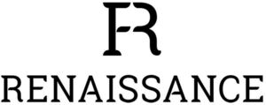

Trade Mark Journal No.2025/029 18 July 2025
WO0000001851360 (3,18,25)
Office of origin: Italy
Date of International Registration:30 December 2024
Date of designation in the UK:
30 December 2024

The trademark consists of an imprint depicting the stylized letters F and R in fancy characters, below which is arranged the wording RENAISSANCE in fancy characters.
International priority date claimed: 9 August 2024
(Italy)
(302024000127654)
- Class 3
- Saddle soaps; preparations for cleaning and polishing leather and shoes; polishes for leather; creams for leather; oils for cleaning purposes; emulsifying solvent cleaners; cleaning agents and preparations; cleaning preparations for leather.
- Class 18
- Saddle trees; saddlebags; saddle belts; fastenings for saddles; saddle blankets; riding saddles; covers for horse saddles; saddlery; straps of leather [saddlery]; whips, harness and saddlery; cushion padding made for saddlery; saddlery of leather; articles of clothing for horses; horse collars; horse blankets; harness for horses; knee-pads for horses; bits for horses; ear bonnets for horses; training leads for horses; saddlecloths for horses; cribbing straps for horses; reins; reins [harness]; girths of leather; halters; bridles [harness]; leather for harnesses; harness straps; harness fittings of iron; harnesses; bags for sports; sports packs; rucksacks; stirrups; stirrup leathers; breast-harness [harness]; martingales [harness]; pads for horse saddles.
- Class 25
- Clothing for sports; polo shirts; shirts; fleece vests; sweatshirts; hoodies; sport socks; sportswear; sports caps and hats; socks; knee-high socks; short sleeve crew-neck shirts; long-sleeve crew-neck shirt; short-sleeve tee-shirts; long-sleeve tee-shirts; warm-up jackets; thermal vests; thermally insulated clothing; wind vests; quilted vests; moisture-wicking sports shirts; fleece pullovers; sweat-absorbent socks; fittings for metal for boots and shoes.
PRESTIGE ITALIA S.P.A.
Representative: Dr. Modiano & Associati SpA, Via Meravigli, 16, I-20123 Milano, ITALY